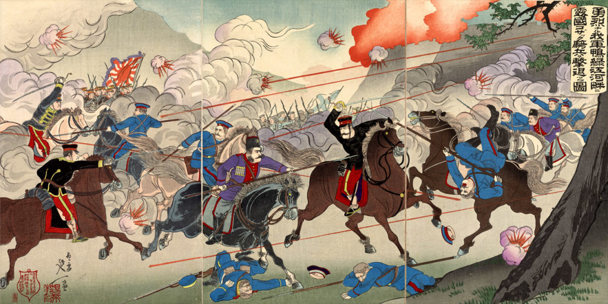

En este víeo explica la historia que ha tenido este país en 6 minutos:
En estos víeos explica algunos datos de Japón, como su cultura e historia, y mucha de sus curiosidades:

En estos víeos explica la historia de la independencia en Estados Unidos y datos curiosos:
 (Hacia la página anterior)
(Hacia la página anterior)